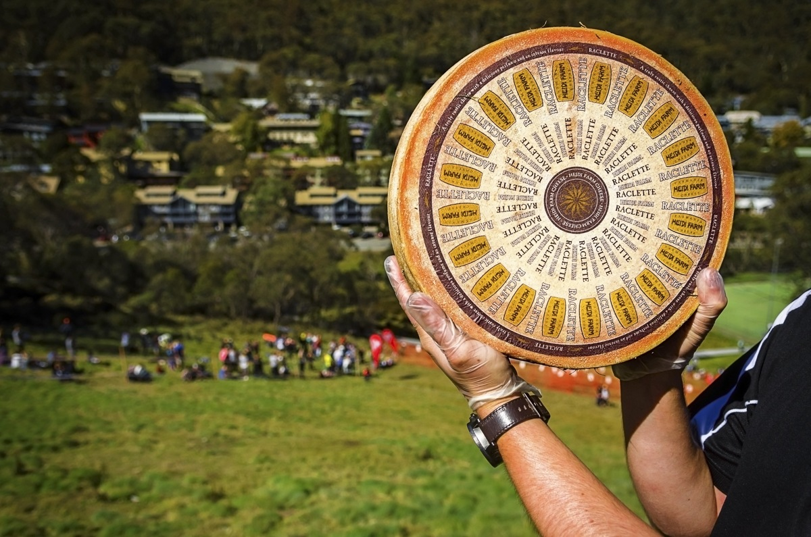

The Cooper's Hill Cheese-Rolling and Wake is an annual event held
on the Spring Bank Holiday at Cooper's Hill, at Brockworth near
Gloucester, England.

First Winner
Roy Mitchell
Won in 1948
Participants race down the 200-yard long hill chasing a wheel of Double Gloucester cheese.
It is uncertain when the tradition first began, and is possibly much older than its earliest known
written attestation in 1826. The event has a long tradition, held by the people of the village,
but now people from a wide range of countries take part in the competition as well.
This ceremony originally took place each Whit Monday, but was later moved to the Spring Bank Holiday.
The first written evidence of cheese rolling is found in a message written to the Gloucester town
crier in 1826. Even then it was apparent that the event was an old tradition, and it is believed
to be at least six hundred years old.
Two possible origins have been proposed for the ceremony.
First, it may have evolved from a requirement for maintaining grazing rights on the common.
Second, there may be pagan origins for the custom of rolling objects down the hill.
It is thought that bundles of burning brushwood were rolled down the hill to represent the birth
of the New Year after winter. Connected with this belief is the traditional scattering of buns,
biscuits and sweets at the top of the hill by the Master of Ceremonies.This is said to be a
fertility rite to encourage the fruits of harvest.